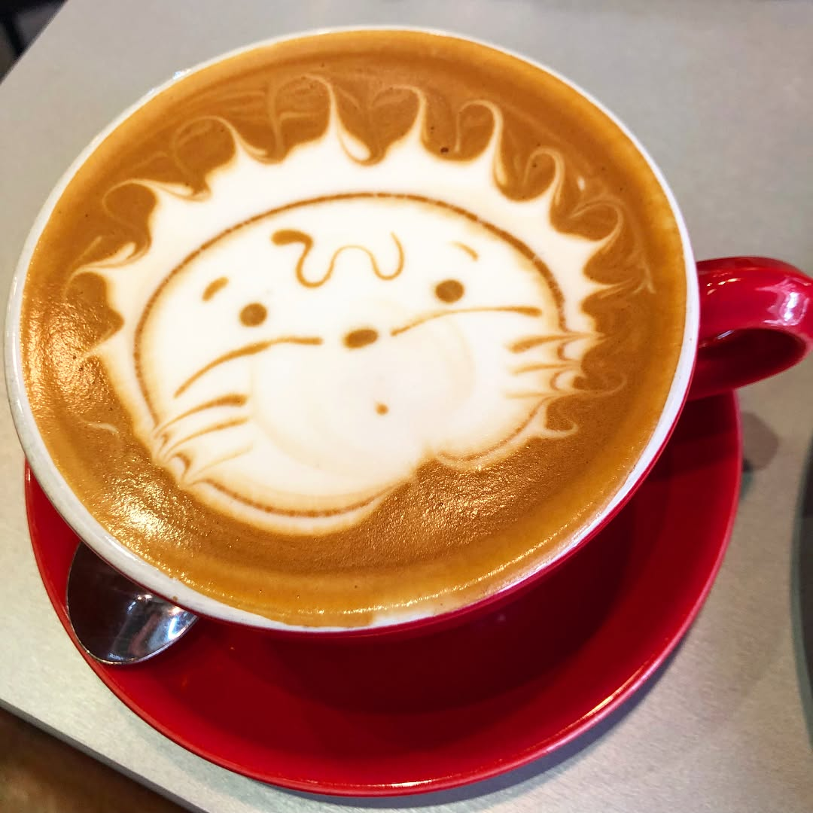
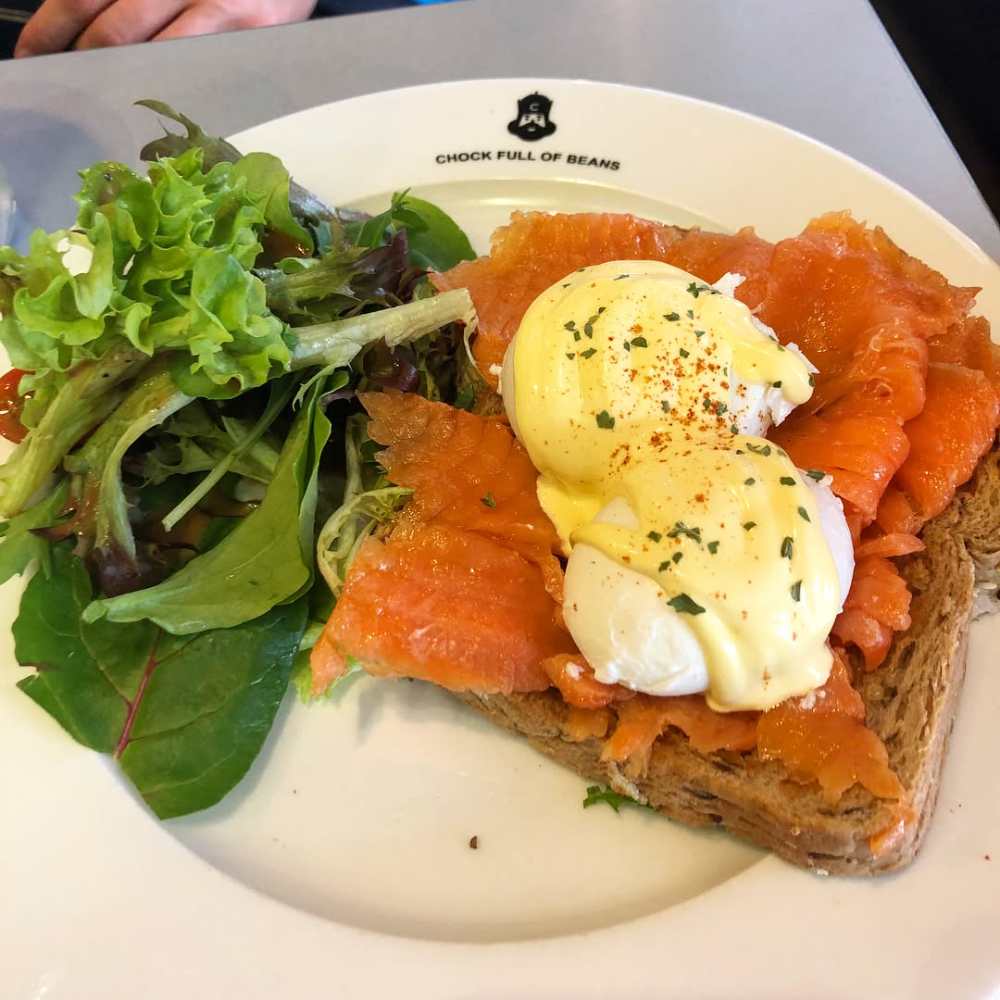
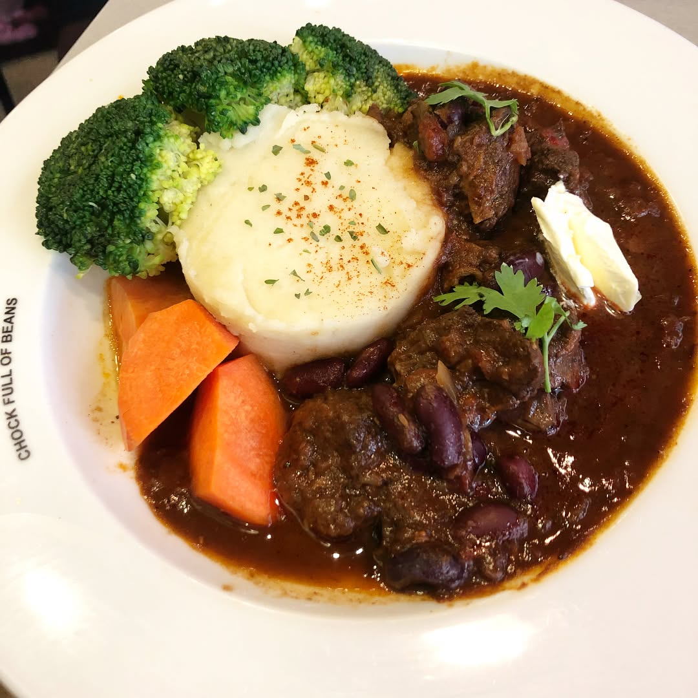

Had awesome brunch at #chockfullofbeans yesterday - favorite place of our racing team (if you ever in Singapore Changi Village - you should visit this place and try their 3D art Frappuccino 😊 @athletestyle do you remember it? 😉). It is a bit weird to have a public holiday on Tuesday, Wednesday feels like a second Monday 😖 yucks . . . . . Сходили вчера на чудесный бранч в #chockfullofbeans (если вы окажитесь в Сингапуре, посетите это кафе в «Деревне Чанги» и попробуйте их 3D арт фрапучино 😊) Кстати, выходной во вторник вызывает достаточно странные ощущения, среда кажется вторым понедельником 😖 — #foodsg #brunch #brunchlover #irunthisbody #triathlontraining #ironmantraining #swimbikerun #marathontraining #ironmantri #trailrunning #foodblogger #instafood #foodography #orbea #cervelo #specializedbikes #giantbikea #canyonbikes #cyclinglife
2018-05-30 20:14:04
Back to main page